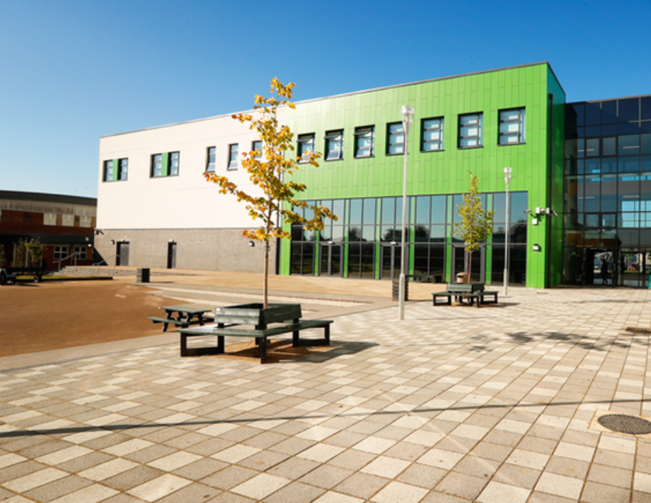
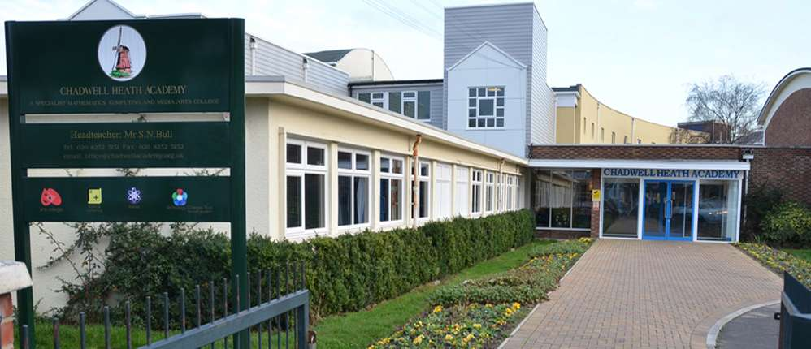
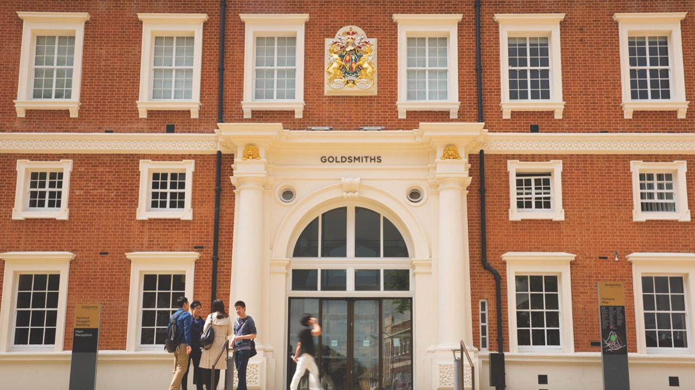

|
My Mayfield Life |
|  |
Mayfield was my first secondary school. I studied there from year 7 to year 11, completing my GCSE'S. I achieved 9Bs/Cs despite having learning difficulties which I did not know of at the time. I made a lot of memories in mayfield and it made me who I am today. I studied Sociology, Religious Education, Busines Studies and Geography. My personal favourite subject was Business Studies as I did well without revising. Business Studies made me think critcally about the small businesses that are in my area. I made many friends at mayfield and was student council in year 8. I went to Westminister University for a conference about the choices we make for our future. I also was part of the Speak Out challenge in year 11 which helped me become more confident. |
|
My Chadwell Life |
|  |
Chadwell Heath was the Sixth Form that I went to for two years where I studied Maths, Economics and Law. By doing these three A levels I was making my plan to become an accountant. However, due to certain circumstances after spending one year at Roehampton University studying BSc Accounting I decided that it's not a course I would like to continue doing. At Chadwell Heath I ran for senior student even though I was an external I wanted to make sure that I take part in all school activities. |
|
My Uni Life |
|  |
Goldsmiths University is where I study BSc Computer Science. I intended to do computer science because I grew up playing games and it got me interested in making games. My sister and brother in law also have jobs linked with the computing industry. They inspired me to do computer science. I have been working hard this year as I want to make sure that I get a first class honours in my first year despite it onlybeing 10% of my degree. I hope to make memories and meet new peple while at this university even though COVID 19 has affected us greatly. |